Wednesday
- Arrive and potentially explore a bit before work.
- Work in the afternoon and evening.
August 26-30
Second chapter of the route: big architecture, old-town pulse, and no-hesitation exploring. This page captures the Krakow city center adventure.
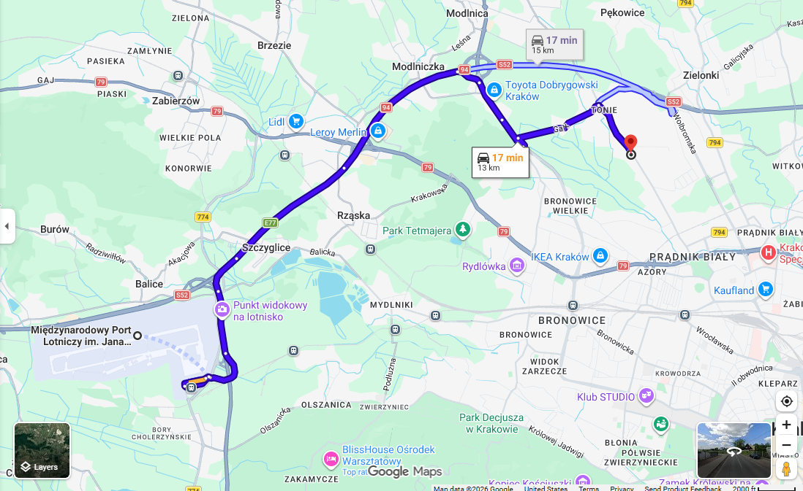
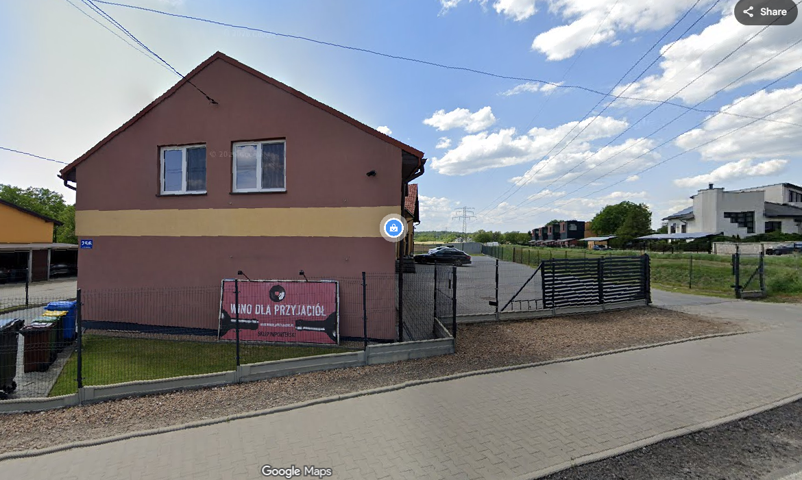
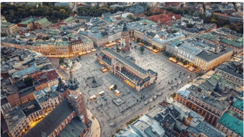
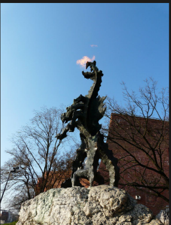
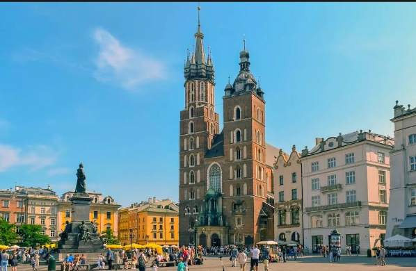
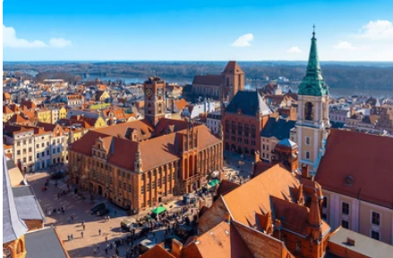
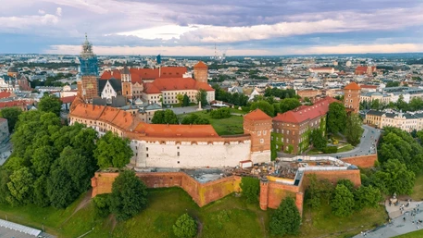
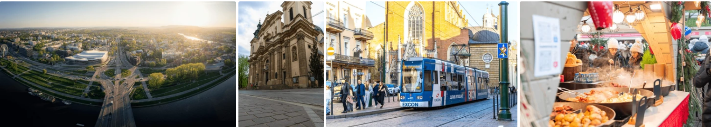
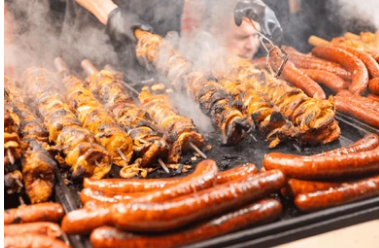

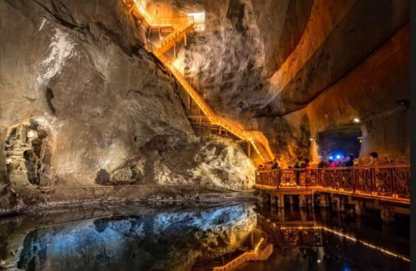
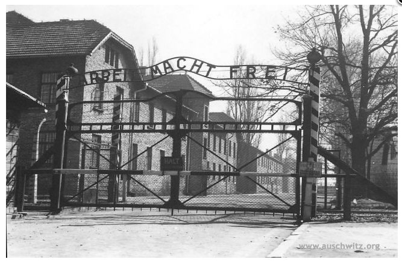
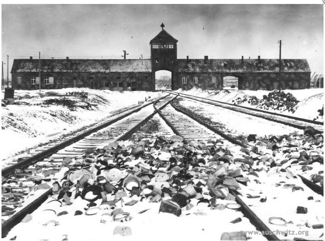
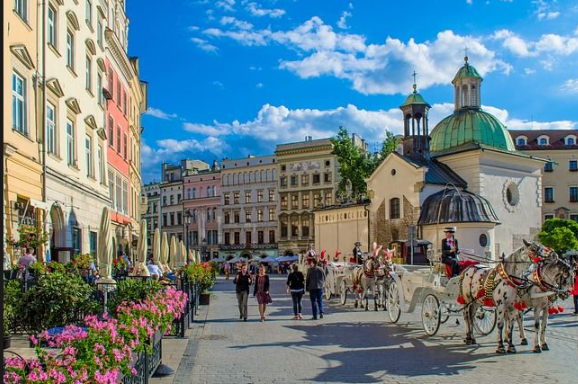
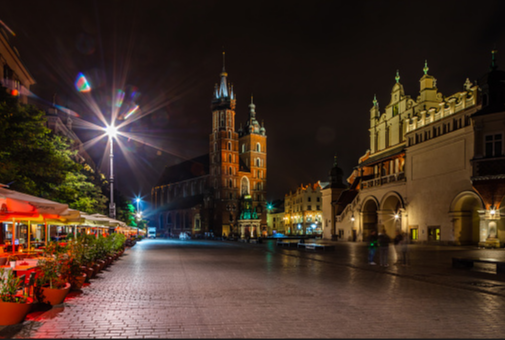
Krakow is specifically about visiting Auschwitz. In college, I took a class called People of the Triangle. We studied art produced in concentration camps, with a strong focus on children and their art. It was intense, and seeing Auschwitz in person is my way of bringing that education full circle.
In a time when history can be erased or rewritten to make nations look better, honoring truth feels essential so it is never repeated. No one can tell me the Holocaust never happened if I have walked those grounds myself. I want to honor the victims, who should never be forgotten or erased because their suffering reflects a dark stain on a country's history.